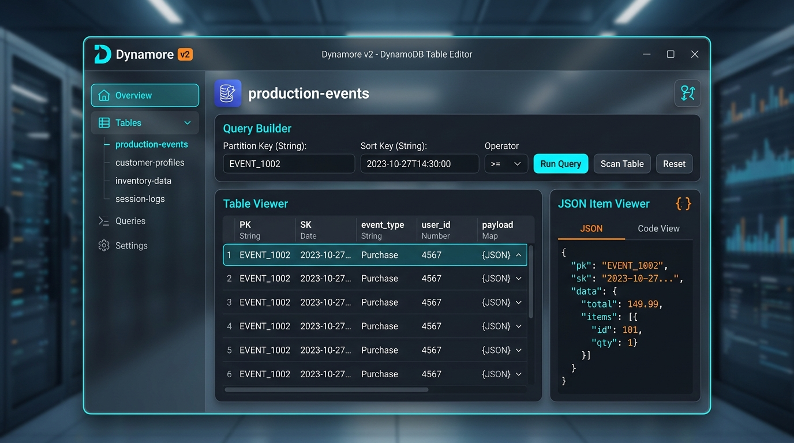

A sleek, ultra-fast desktop client engineered for AWS power users. Instant startup, sub-millisecond query execution, and zero bloat.

Everything you need to inspect, query, and manage DynamoDB tables with effortless precision.
Connect seamlessly using your AWS Identity Center profiles with automatic credential refreshing.
Consumes up to 90% less RAM than legacy Electron clients with instant application cold starts.
Build complex Partition and Sort key expressions with visual filter rules and pagination.
Edit DynamoDB attributes directly with full schema validation and auto-type conversion.
Create and configure DynamoDB tables, GSI/LSI indexes, and provisioned throughput in seconds.
Modern dark-mode design tailored for low eye strain during long coding and debugging sessions.
Cross-platform support for macOS, Windows, and Linux.